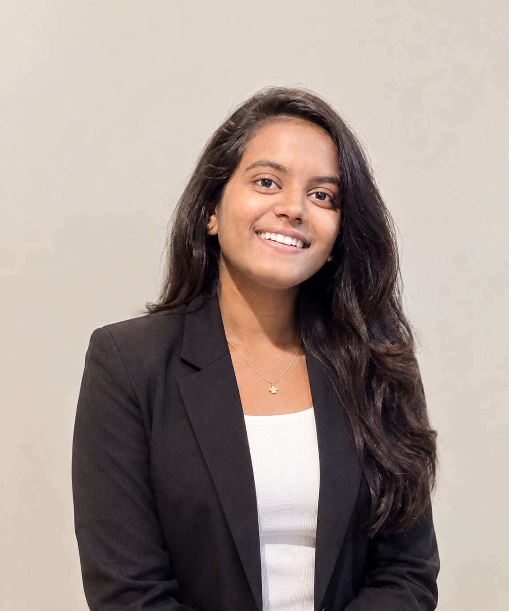

Hi, I'm Chelli Akshaya.
B.Tech CSE student who works with Power BI, SQL, Python and statistics to find the story inside the numbers.


About me
I'm a Computer Science student who enjoys finding patterns in messy data and explaining them clearly. I'm learning to clean, analyse and visualise data so that people can make better decisions.
My final project mines social media and news to spot disease outbreaks early. It showed me how useful data can be when timing matters.
Skills
The tools I use to take data from raw to ready to present.
Power BI
Build interactive dashboards and reports that make trends easy to read.
SQL
Query, join and summarise data stored in relational databases.
Python
Clean, explore and analyse data with scripts.
Statistics
Use descriptive statistics and probability to back up findings.
Education
Where I'm studying now.
B.Tech in Computer Science and Engineering
DNR College of Engineering Technology
Projects
Work that shows how I approach a real problem.
Intelligent Disease Outbreak Detection and Early Warning System Using Social Media and News Mining
A system that mines social media posts and news articles to detect signs of a disease outbreak early, so that warnings can be raised sooner.
Certifications
Courses I have completed.
Python Full Stack Developer
Talentshine, India
Resume
Chelli Akshaya, Aspiring Data Analyst
- B.Tech CSE, DNR College of Engineering Technology
- Power BI, SQL, Python, Statistics
- Python Full Stack Developer certification
Contact
Message me about opportunities, projects or internships.